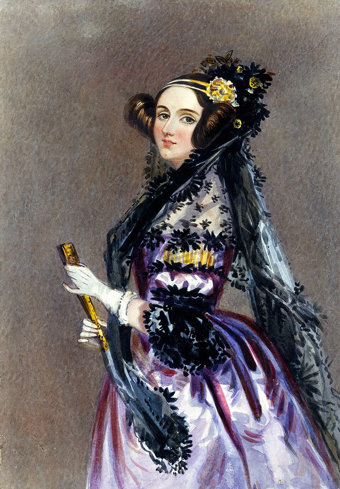
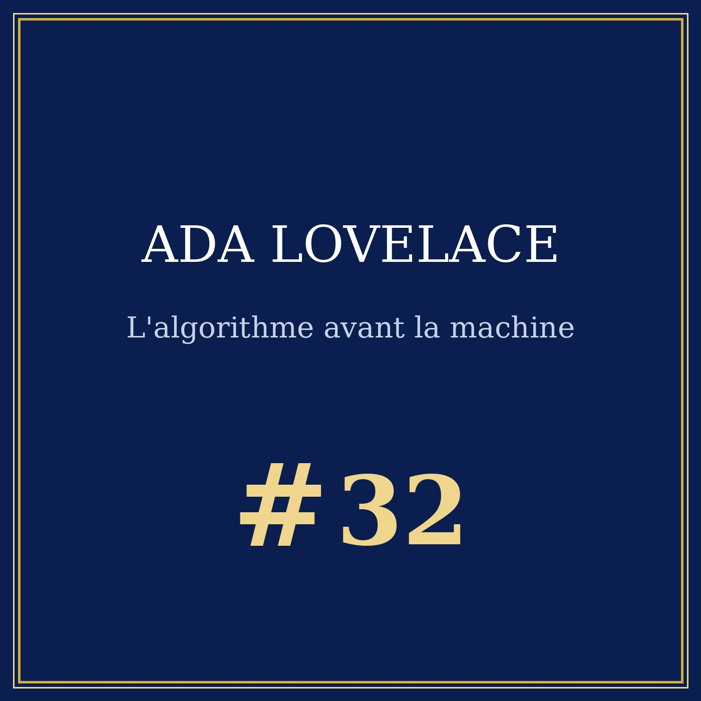

Portrait n°32 - la comtesse qui a écrit le premier programme sur une machine qui n'a jamais existé
Œuvre de fiction radiophonique et biographique à caractère historique et patrimonial. Les faits présentés dans cet article sont réels et sourcés ; l'entretien est une reconstitution imaginée.

Ada Lovelace - L'algorithme avant la machine, épisode n°32 - durée de l'entretien à venir
🎧 Télécharger l'audio ·
🖼️ Pochette de l'épisode

Dans une maison de Marylebone, à l'été 1843, une comtesse de vingt-sept ans relit un volume qui vient de sortir des presses : la traduction anglaise d'un article italien consacré à une machine qui n'existe pas. Elle y joint sept notes, signées de trois lettres, A.A.L. Un siècle et demi plus tard, on lit encore ces pages comme le premier programme de l'informatique, et l'on s'étonne surtout d'une phrase glissée au passage : la machine n'a aucune prétention à rien originer.
Fille d'un poète célèbre qu'elle n'a jamais vu, comtesse de vingt-sept ans sans le droit de disposer de son propre argent, Ada Lovelace écrit en 1843 le premier algorithme jamais publié - pour une machine qui ne sera jamais construite. Elle pose en même temps la question qui partage aujourd'hui les informaticiens en deux camps : une machine peut-elle penser ?
La scène est celle d'un premier livre de mathématiques applicatives. En 1840, à Turin, Charles Babbage donne la seule conférence publique de sa vie sur sa machine analytique. Un Italien, Luigi Federico Menabrea, en rédige un compte rendu en français, publié en octobre 1842 dans la Bibliothèque universelle de Genève. En février 1843, Charles Wheatstone propose à Ada Lovelace de traduire ce texte en anglais. Neuf mois de travail.
La traduction paraît dans le troisième volume des Scientific Memoirs de Richard et John E. Taylor, à Londres, en 1843. Les sept notes de l'a-traductrice suivent, de A à G, tirées le 24 août 1843. Elles sont signées A.A.L. - une femme de ce rang ne signe pas son nom dans une revue - et font environ trois fois la longueur de la traduction elle-même.
Ce que l'on retient, c'est la note G : une table d'opérations pour le calcul des nombres de Bernoulli, écrite pour être exécutée par la machine. Le premier algorithme publié pour un calculateur. Babbage lui avait fourni les formules de base et elle y a corrigé une erreur grave de son calcul, comme le rapporte Babbage lui-même dans ses Passages from the Life of a Philosopher (1864).
Augusta Ada Byron naît le 10 décembre 1815 à Londres, fille de George Gordon Byron et d'Anne Isabella Milbanke. Le couple se sépare le 16 janvier 1816, un mois après la naissance ; Lady Byron obtient la garde de l'enfant. Byron part pour le continent en avril 1816 et meurt en 1824 en Grèce : Ada ne le verra jamais.
Ce qui structure l'enfance, c'est la réaction de la mère. Byron étant poète, Lady Byron veut tenir sa fille à l'écart de la littérature : elle lui fait donner des leçons de mathématiques, avec pour précepteurs William Frend et William King. C'est l'ironie fondatrice du personnage, et Ada l'a formulée elle-même dans une note que l'English Heritage reproduit sur sa plaque bleue : je ne crois pas que mon père ait été ( ou ait jamais pu être ) un aussi grand poète que je serai un analyste ( et métaphysicien ). Un plan qui rate son but - et qui lui donne l'outil qui rendra possible tout le reste.
En 1832, Ada rencontre Mary Somerville, qui lui présente Babbage le 5 juin 1833. En 1835, elle et Caroline Herschel sont les premières femmes admises à la Royal Astronomical Society. En 1840, Auguste De Morgan accepte de lui enseigner le calcul et l'analyse supérieure : elle étudie avec lui en 1840-1841, le soir, entre ses cours. La lettre que De Morgan adresse à Lady Byron le 21 janvier 1844 est sévère : la « force de raisonnement » d'Ada est, écrit-il, utterly out of the common way for any beginner, man or woman, et elle aurait pu être Senior Wrangler à Cambridge si elle avait été un homme. Comme l'a relevé l'étude de C. Hollings, A. Martin et A. Rice (Bulletin of the British Society for the History of Mathematics, 2017), c'est à la fois le plus grand compliment et la preuve du plafond.
Le 8 juillet 1835, Ada épouse William King-Noel, 8e baron King, qui devient en 1838 premier comte de Lovelace. Le contrat de mariage, consultable dans les archives du Surrey County Council, mentionne 30 000 livres de dot et 600 livres par an d'argent de poche pour la comtesse, et établit que le mari tient les comptes du ménage.
Le point est juridique, et il pèse sur toute la suite. Une femme de l'aristocratie anglaise de 1843 ne possède pas son argent : elle le reçoit. Ada en parle sans amertume dans l'entretien, mais elle en fait une clé de lecture : une femme qui écrit sans avoir la main sur son propre argent écrit sur un sol qui peut lui être retiré. Il faut y ajouter le reste : trois enfants en cinq ans - Byron en 1836, Annabella en 1837, Ralph Gordon en 1839 -, des fiefs à gérer (Ockham Park, Loch Torridon, une maison de Londres), des courses de chevaux, et une maison où la comtesse s'occupe de tout sauf de ce qui l'intéresse.
La rencontre de 1833 se fait autour d'un fragment : Babbage montre un bout de machine à différences, fait de roues de laiton, et calcule devant elles. Ada comprend tout de suite ce que fait la machine, là où d'autres autour d'elle ne le voient pas. Babbage conçoit la machine analytique à partir de 1834, et lui partage son idée générale dès novembre 1834. Il cherchait une machine qui ne fût pas seulement un outil de calcul ; il demande à la jeune femme de l'aider à l'expliquer. C'est elle qui traduit, commente et corrige.
Et la machine n'existera jamais. Babbage n'en construira qu'une fraction, le Thesaurus, à la fin de sa vie ; son fils Henry en construira une partie du moulin entre 1880 et 1910, conservée au Science Museum. Babbage avait pourtant accumulé les plans : 446 « notations » de la machine analytique entre 1830 et 1847, selon le décompte rapporté par Stephen Wolfram, plus simples et moins fameuses que l'algorithme d'Ada. C'est le cas de le dire : ce n'est pas l'homme de la machine, c'est la lectrice qui a su dire ce que la machine ferait.
Babbage lui écrit à l'automne 1843 - le 9 septembre - pour la traiter d'Enchantress of Number, et de my dear and much admired Interpreter. Le surnom a voyagé plus loin que la lettre, puis le livre de Betty Alexandra Toole, Ada, the Enchantress of Numbers (1992), l'a fixé dans la culture populaire. Ada, elle, ne l'a jamais revendiqué. Ce qu'elle préférait qu'on lui dise, c'était qu'elle était poétesse de la science.
Il faut regarder la note G de près, parce que c'est là que se joue le mot « programmation ». Ce n'est pas une formule, c'est une table d'opérations : on part de Bernoulli, on écrit la suite des manipulations dans l'ordre, et l'on précise où la machine doit s'arrêter et où elle doit reprendre. Ada dit elle-même dans l'entretien que son but n'était pas la facilité du calcul, mais d'illustrer les pouvoirs de la machine.
Sa formulation de 1843 est précise, et elle refuse les titres rétrospectifs : c'est le premier procédé de calcul destiné à être exécuté par une machine, publié comme tel. « Première programmeuse » est un mot de notre époque, pas du sien ; et elle ne revendique pas l'idée de faire calculer par une machine, qui était celle de Babbage avant elle. Ce qu'elle a donné au projet, c'est sa forme écrite. Le texte est consultable dans Scientific Memoirs, volume III, Londres, 1843, p. 666-731, et l'article de J. Fuegi et J. Francis (Annals of the History of Computing, 25(4), 2003) en a reconstitué la genèse.
Un détail rend la chose moins héroïque et plus humble : Babbage avait compilé ces 446 notations de sa propre main, et Ada les lit. Le mot « programme » ne désigne pas encore un objet informatique : il désigne une liste d'instructions publiée par une femme qui n'a jamais vu tourner la machine qu'elle vise.
Dans la note A, Ada Lovelace va beaucoup plus loin que le calcul. Si les rapports fondamentaux des sons, dans l'harmonie et la composition, peuvent s'exprimer par les mêmes relations abstraites que les quantités, alors la machine, qui manipule ces relations, peut composer des pièces d'une complexité arbitraire : compose elaborate and scientific pieces of music of any degree of complexity or extent. Le moteur peut agir sur d'autres choses que le nombre : des lettres, des symboles, des notes. Babbage voyait une machine à calculer ; elle voyait une machine à composer.
Et voici l'image qui a traversé le temps : le moteur tisse des motifs algébriques comme le métier de Jacquard tisse des fleurs et des feuilles. L'analogie est de Babbage, reprise et corrigée par Ada dans ses notes. Elle est arrivée par le travail, pas par le voyage : les sources situent en 1834 une tournée d'usines en Angleterre avec sa mère, dont une fabrique de rubans à Coventry, et aucune visite du métier de Jacquard à Paris n'est confirmée - elle ne s'était pas encore mariée.
Au milieu de tout cela, la phrase qui compte le plus : la machine analytique n'a aucune prétention à rien originer ; elle peut faire tout ce que nous savons lui ordonner de faire. Ada y distingue deux choses que l'on confond toujours : le calcul et l'expression. Calculer, c'est exécuter une suite d'opérations que quelqu'un a inventée ; composer, c'est choisir, et le choix reste humain.
Il y a un moment où tout se retourne. Babbage avait fait insérer en tête de l'article une déclaration critique sur le traitement réservé par le gouvernement à ses machines, et cette déclaration devait rester anonyme. Le rédacteur de la revue a exigé qu'elle soit signée. Babbage écrit alors à Ada pour lui demander de retirer l'ensemble du texte - ignorant qu'elle n'en savait rien, et qu'elle l'a appris par sa lettre. Elle refuse : retirer un article publié parce que le coauteur a peur de son ombre n'est plus de la prudence, c'est une censure. Elle lui répond que ce serait indigne et injustifiable. La chronologie complète, reconstituée par Green puis par Fuegi et Francis, est claire : le tirage a lieu le 24 août 1843, et le conflit se joue dans les semaines qui précèdent.
Un siècle plus tard, la phrase de la note G devient une cible. En 1950, dans Computing Machinery and Intelligence, le mathématicien britannique Alan Turing la reprend et la baptise l'objection de Lady Lovelace, avant d'y répondre : on peut ordonner à une machine d'être originale. La question d'Ada - une machine peut-elle penser ? - n'était pas de savoir si la machine ferait plus qu'un homme, mais si elle pouvait avoir une vie propre. C'est sa formulation qui est devenue le test, et c'est elle qui reste sans réponse.
Ada Lovelace a passé des années entre la chambre et le canapé. Santé fragile depuis l'enfance, pertes de sang récurrentes, opium : le Science Museum et les Bodleian Libraries rappellent que sa santé déclina nettement après 1843. Les médecins n'y entendaient rien, et le saignement ne leur semblait pas le bon remède, comme le dit l'entretien. Elle joue au horse-booking et perd gros : elle met en gage des bijoux, et le MacTutor note une perte de 3 200 livres au Derby d'Epsom et une dette de jeu de 2 000 livres à sa mort.
Elle meurt le 27 novembre 1852 à Marylebone, à trente-six ans, d'un cancer - un cancer du col de l'utérin dans la terminologie actuelle, la « maladie utérine » de l'époque. Son père en avait trente-six. Elle est enterrée, à la demande de sa mère, dans l'église Sainte-Marie-Madeleine de Hucknall, dans le Nottinghamshire, à quelques kilomètres de Lord Byron, qu'elle n'a jamais connu.
Pendant plus d'un siècle, Ada Lovelace disparaît de l'histoire : on ne parle d'elle que comme de la fille bizarre du célèbre poète. Ses notes sont rangées dans une bibliothèque ; on les réimprime en 1953, en annexe du livre de B. V. Bowden, Faster than Thought, et l'on s'étonne. Ce n'est pas de l'oubli, c'est de la paresse : on ne lit pas ce qu'on ne comprend pas.
La réinsertion passe par les machines. Le Science Museum de Londres construit la machine à différences n°2 de 1991 à 2002 - 8 000 pièces, cinq tonnes - sous la direction de Doron Swade, et numérise l'archive Babbage en 2012. En 2011, Swade et John Graham-Cumming fondent le projet Plan 28, pour reconstruire la machine analytique à partir des plans d'origine. Aujourd'hui, on lit ses notes comme un programme.
Le reste est monetarisation du souvenir : la défense américaine nomme en 1979-1980 son langage de programmation Ada, et l'Association for Women in Computing crée en 1981 un prix Ada Lovelace. L'English Heritage pose en 1992 une plaque bleue au 12 St James's Square à Londres (le blog de la Bodleian Libraries mentionne 1993). Depuis 2009, le deuxième mardi d'octobre est l'Ada Lovelace Day, créé par Suw Charman-Anderson.
Le monde a fini par payer en monuments ce qu'il refusait en moyens. Ada, dans l'entretien, refuse le mot programmeuse et propose une autre formule : la première programmatrice, dans l'histoire du mot, a d'abord été une lectrice. Elle a lu une machine dans la tête d'un homme, et elle a écrit ce qu'elle y a trouvé. La question qu'elle a posée reste entière, et c'est ce qui rend son travail vivant : tant que personne n'y répond, la note G n'est pas un monument, c'est une question en cours.